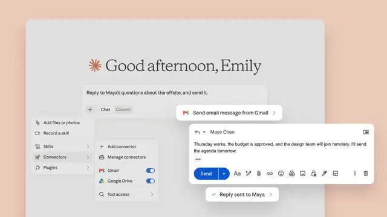

#claude
ClaudeがGmail送信とGoogle Driveのファイル操作に対応

Anthropicは、ClaudeからGmailのメール送信やGoogle Driveのファイル管理を直接実行できる新機能を発表しました。これまで情報を検索・要約・下書きするだけだったAIアシスタントから、外部サービスへ実際に変更を加える「実行型エージェント」への進化を示すアップデートです。0
記事で取り上げている点
- Gmailは下書きから「送信」まで実行
- Google Driveも「読む」から「操作する」へ
- 企業導入では権限設計が重要
- 今後の展望
一次情報（出典） twitter.com